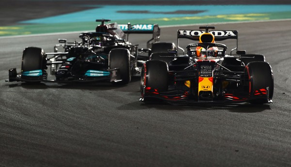
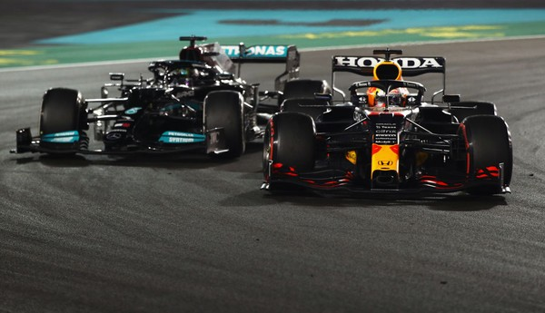

The Final Lap That Redefined a Rivalry: Abu Dhabi 2021
The final chapter of the 2021 Formula 1 season was not
just a race; it was
the culmination of one of the most ferocious and captivating rivalries in the sport's modern
history. Max Verstappen and Lewis Hamilton arrived at the season finale in Abu Dhabi under the Yas
Marina floodlights in a position of perfect equilibrium, tied on points after a grueling 21-race
battle. The context was a season defined by spectacular on-track duels, controversial collisions at
Silverstone and Monza, and a pendulum of momentum that swung violently between the two titans.
Hamilton, seeking a record-breaking eighth world title, had seized the advantage for most of the
race, building a comfortable lead that seemed destined to carry him to victory.
With just five laps remaining, the narrative was shattered. A crash by Williams driver Nicholas
Latifi brought out the safety car, erasing Hamilton's commanding lead and handing Red Bull a
critical strategic opportunity. They immediately pitted Verstappen for a fresh set of soft tires,
while Hamilton, in the lead, stayed out on his old, worn hard tires to maintain track position, a
decision that would prove fateful. The controversy erupted around the race director's unprecedented
handling of the lapped cars situated between Hamilton and Verstappen. Initially, it was announced
they would not be allowed to unlap themselves, but under pressure, the decision was suddenly
reversed for only the five cars separating the two title contenders, clearing the path for a direct
confrontation.
This set the stage for a single, winner-takes-all final lap of racing. With the safety car peeling
into the pits, Verstappen, armed with superior grip, was perfectly positioned behind Hamilton. He
launched his attack into Turn 5, lunging down the inside in a bold, decisive move. Hamilton tried to
fight back on the straights, but Verstappen's tire advantage was insurmountable. He held his ground,
defending furiously through the final sequence of corners to cross the finish line and seize his
maiden Formula 1 World Championship in the most dramatic and contentious circumstances imaginable.
The aftermath was immediate and intense. The Mercedes-AMG Petronas team lodged two official protests
against the race result, both of which were ultimately dismissed by the stewards hours after the
race. The controversy dominated headlines for weeks, sparking a firestorm of debate among fans,
media, and the F1 community over the interpretation and application of the sport's regulations. The
fallout led to a full investigation by the FIA, the sport's governing body. The inquiry resulted in
significant changes to the race direction structure for the 2022 season, including the removal of
Michael Masi as race director and a clarification of the safety car procedures. While the record
books show Max Verstappen as the 2021 World Champion, the final lap in Abu Dhabi remains one of the
most debated and defining moments in Formula 1 history, a spectacle of pure drama that crowned a new
champion and fundamentally altered the sport's operational rulebook.